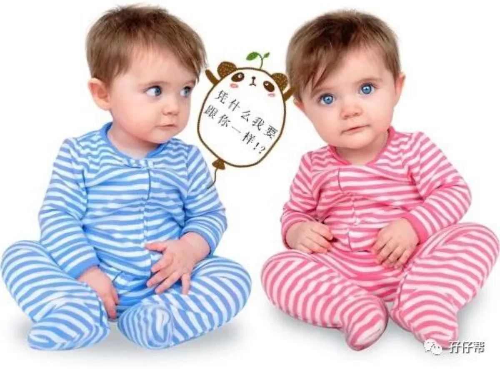
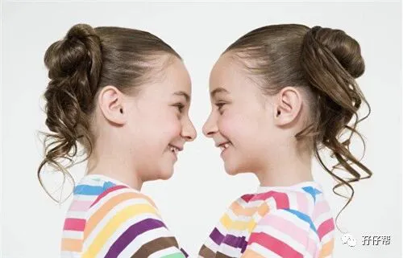
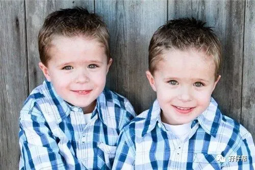
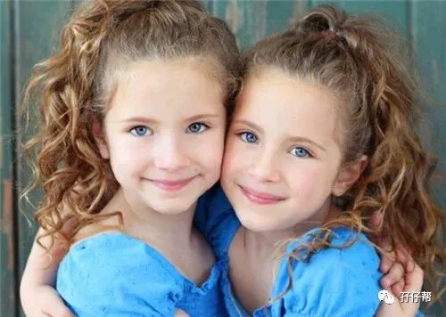
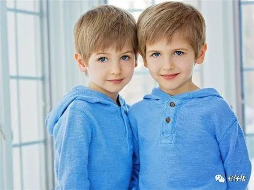

文|圆圈妈，一个文思如尿崩的双胎妈妈
图|来自网络，如有侵权，请联系删除
· 正 · 文 · 来 · 啦 ·
起床！
“圈圈，圆圆已经在刷牙了，你还赖在床上！”
吃饭！
“圈圈，你怎么吃那么慢，圆圆已经把饭吃完了。”
爬山！
“圆圆，你总是慢吞吞的，你看圈圈跑得多快啊！”
“….”
以上是我在养育双胞胎时的日常片段…
你有没有似曾相识的感觉？
如果真如此，那说明我们在双胞胎育儿路上，都不约而同犯了一个很低级的错误：总喜欢拿双胞胎直接作对比，比谁走得稳，比谁吃得快，比谁长得高…
而且，你还会发现一个现象。
只要是家有二孩或以上的家庭都会拿自家孩子与别家孩子比较，或者手足之间互相比较。
不同的是，在双胞胎家庭，两孩子必须跟一个与自己同年同月同日几乎同时生、甚至长得一模一样的手足暗中较劲。
我自己不是双胞胎，面对双胞胎的教养，我总是格外小心处理，很担心一个不经意的词语或者表情伤害到两孩子。
假设自己和另一个人很像，其实是一种幸福也是一种无形的负担，因为一点都不自由，但我希望能够将这种不自由降到最低。
然而，现实往往背道而驰，我经常掉入一个误区：总喜欢拿双胞胎孩子们作比较。
仿佛他们样貌一样，其他方面也必须一样，若稍微有不一样，就会觉得那个不一样的孩子很另类，是不应该的，是不允许的。
圆圆吃饭很自觉，圈圈喜欢呡饭，每次看到他把饭含在嘴里不吞进去，我就火冒三丈又不好发作，只好激将法：“哇，看圆圆吃得多快，圈圈肯定追不上！”
于是，不甘落后的圈圈赶紧把嘴里的饭咽进去，然后使劲张大嘴巴扒一口饭，向我们示威！
而我的目的达到了，就微笑地点头并称赞他的后来居上，似乎在鼓励他，默认他的行为是正确的！
尝到甜头的我沉浸在这种所谓的“得天独厚的双胞胎优势”之中无法自拔，直到有一次无意中听到队友训圈圈的一句话，我顿时呆住了。
队友陪他们玩拼图，圆圆很快就完成了，圈圈还在琢磨中，于是队友就催促道：“圈圈，你怎么那么慢啊，看圆圆早就拼好！你要是再拼不好，我就没收你的拼图！”
圈圈听到拼图要被没收，理由是自己没有圆圆拼得快，着急得直跺脚，情急之下把拼图砸在队友身上，大哭！
队友这只猪啊，不明所以，依然笑嘻嘻地看着恼羞成怒的圈圈。
只有我看到他窘迫的脸上写满委屈，羞愧，无助…
圈圈不是个轻易哭泣爱打人的孩子，他一定是被刺激到了。
长期被我们拿来与圆圆比这比那，他好烦，好累，好无奈，又不懂表达，只能大哭或打人，以示抗议。
我恍然大悟，似乎明白了圆圈兄弟在幼儿园不团结的原因。
老师家访时跟我们反馈，圆圈跟别的双胞胎不一样，不喜欢找彼此一起玩，都是各玩各的，好像是完全不相关的两个陌生人。
有时候老师特意让他们哥俩坐在一块了，他们也会互相厌恶似的各自分开。
更让人匪夷所思的是，其中一人被罚站，另一人却在旁幸灾乐祸。
我给老师的解释是，可能他们在一起太久了，玩腻了，喜欢找别的小伙伴一起玩！”
但现在看来，并不是哥俩彼此玩腻了那么简单，而是他们厌倦了在一起时经常被大人拿来做比较。
明明是亲兄弟，非要搞得跟竞争对手似的做各种无聊的比较，以至于他们内心很矛盾，想玩在一块却又无可奈可，想暗中较劲却又力不从心。
而我确实发现，当我夸奖圆圆时，圈圈会不高兴，甚至会恼羞成怒，动手打对方，当我惩罚圆圆时，圈圈会跑过来跟我求情。
这让我不禁怀疑这种双胞胎之间的相爱相杀会不会是家长总拿对方做比较造成的。
我问圆圆为什么不找圈圈一起玩，圆圆不回答！
我问圈圈为什么不找圆圆一起玩，圈圈也不回答！
然后我看见他们各自看着彼此一眼，低头，沉默…跑走了…
一个貌似没有答案的问题，从他们哥俩那短暂的彼此对视中，我已经找到了答案。
双胞胎不易做，有苦说不出。
就像在蝴蝶的眼中，每一朵看起来一样的花都是独一无二的！他们有自己的美丽与香气，也有自己独特的个性与心情。
圈圈吃饭慢，可能是他喜欢细嚼慢咽，他拼图没有圆圆快，也许他在琢磨着更好的玩法...
他们很多时候都不同步，不统一，不一样，在很多方面都不相上下，不分伯仲，各有千秋....
两人能你追我赶，互相帮助，互相鼓励，良性竞争，和谐相处，共同成长，这就够了！
为什么非要一样呢？
然而，由于双胞胎的特殊性，几乎所有双胞胎孩子都无可避免在“被期待”中成长。
皆因我们成人那些有点无聊，有点俗气，甚至有点幼稚肤浅的认知。
我们成人总是喜欢用放大镜，无限放大一人是另一个人的复制粘贴。
比如谁身高比较高？谁身材比较苗条？谁长得比较可爱？谁功课比较好？
即便家长自己秉持着从不比较的心态，总有那么一些“热情如火”的亲戚朋友会在茶余饭后，觥筹交错间拿双胞胎孩子们评头论足一番。
双胞胎分明是两个独立的个体，存在差异性是必然的，却总不被旁人理解。
他们想要发展不同自我的权利总是被轻而易举地剥夺掉。
强烈呼吁！
请立刻停止双胞胎之间那些毫无意义的比较！
企图通过「做比较」来互相激励，让他们更加努力，是个错误的行为，不但达不到预期的效果，还会事与愿违。
这些围绕着双胞胎的频繁比较，会无形中变成一种压力，剥夺两孩子的独特性，会使表现较不符合期待的其中一人自尊心受到伤害，个性也会变得畏首畏尾，或者彼此互相讨厌憎恨对方，形成恶性竞争。
孩子心思敏感而脆弱，很在意父母对自己的爱，尤其是在自己表现不好的时候，更是忐忑不安。
如果这个时候，父母总在孩子面前提及另外一个孩子如何优秀，就会引发孩子迁怒于那个比他好的人，甚至会为自己的不如人找出各种各样的理由。
双胞胎是一对孩子，同时也是两个孩子。
只是年龄一样大，样子长得有点像，但性格，气质，思维，行为习惯等完全不一样的两个孩子。
作为双胞胎父母，应该尊重两孩子不同的特质与优点，多鼓励、少比较。
帮助双胞胎孩子知道自己就是自己,可以发展出不同的世界，化解两孩子内心的小疙瘩，让孩子在充满自信的环境中成长。
后记
以上是我在养育双胞胎过程中一个经常犯的错误以及一些心得体会，分享给有同样苦恼的双胞胎家庭，引以为戒。
我有意识到这个育儿误区，但偶尔还是会不小心踩到地雷，目前无计可施，还在琢磨着解决方案。
希望更多双胞胎家长加入双胞胎教育群一起探讨双胞胎孩子的非常教育。
今日互动话题
#你家双胞胎孩子被比较了吗？#
欢迎留言区说出你的苦恼
-END-
重磅互动
#你希望写什么育儿经验干货？#
评论区聊一聊
随便提，万一下篇就写了呢？
关于这个号
谢谢关注！
我是圆圈妈
85后，全职妈妈
家有孖仔两枚，圆圈&圈圈
双胞胎育儿公众号：孖仔帮
ID:twinsbang
旨意分享双胞胎育儿经验帮助双胞胎家庭
有经验可循
有组织可靠
希望我的经验对您有所启发
期待与您一起共享双胞胎育儿经




